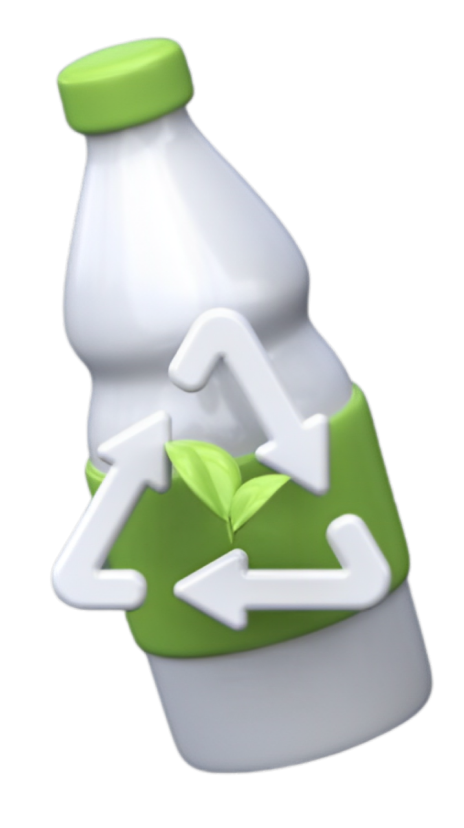

Greensweep bangga menjadi mitra resmi Kementerian Lingkungan Hidup Indonesia dalam menjalankan misi kami untuk mengurangi limbah dan menciptakan lingkungan yang lebih sehat. Dengan program tukar poin sampah, kami berkontribusi secara aktif dalam mengelola limbah dengan baik, mendorong praktik ramah lingkungan, dan berperan dalam mengurangi dampak negatif limbah terhadap lingkungan melalui pengolahan yang efisien dan program inovatif yang menginspirasi.
Menurut Sistem Informasi Pengelolaan Sampah Nasional, Indonesia telah menimbulkan sampah sebanyak 19,517,172.98 ton per tahun, 16.69% pengurangan sampah per tahun, 50.12% sampah yang ditangani, 66.82% sampah yang terkelola, dan 33.18% sampah yang tidak terkelola. Dari data-data tersebut, masih terbukti bahwa sampah di Indonesia masih banyak yang belom terkelola.
Oleh sebab itu, hal tersebut telah mendorong kami untuk membuat website yang bernama GreenSweep. Kami berharap dengan website GreenSweep, sampah-sampah yang tidak terkelola di Indonesia dapat segera diatasi.
Tujuan kami membuat website GreenSweep adalah untuk membantu masyarakat Indonesia supaya tidak sembarangan membuang barang-barang yang tidak terpakai ataupun sampah, melainkan melakukan daur ulang. Dengan melakukan daur ulang, sampah-sampah yang tidak terkelola di Indonesia dapat segera diatasi. GreenSweep juga memberikan berita tentang sampah untuk menyadarkan masyarakat.